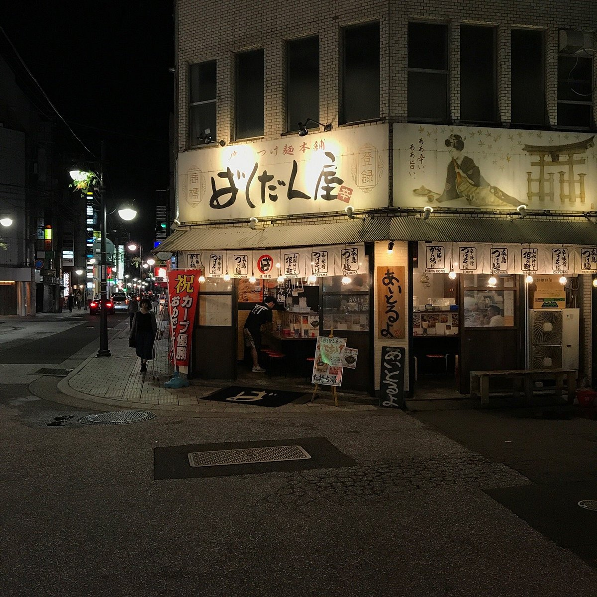

Bakudanya Main Store
★★★★
Coold noodles, perfect for summer. Regional speciality!

- Instalations: Chainstore 7/10
- Location: 〒730-0034 Hiroshima, Naka Ward, Shintenchi, 2−12 新天地ビル １F トーソク (Google Maps: https://maps.app.goo.gl/Fxpn7g7BJQJN5qGC9)
- Aproximately ¥1000-¥2000
- They take credit card and cash.